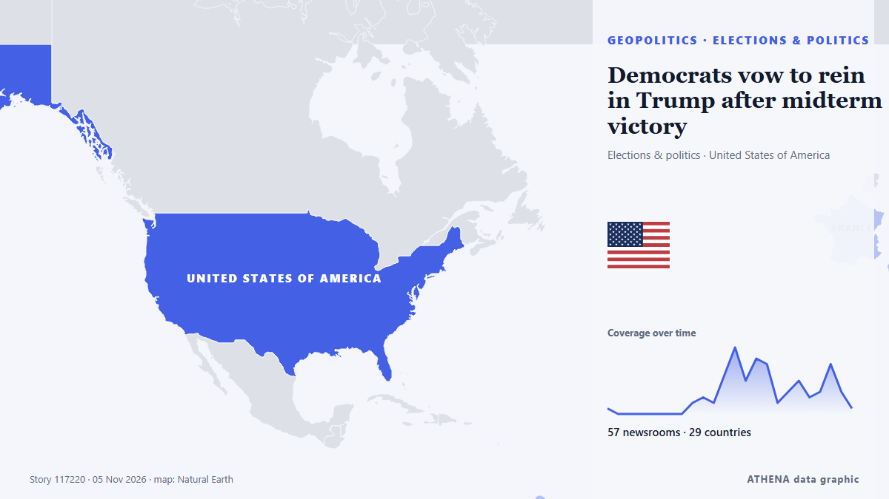

Democrats vow to rein in Trump after midterm victory

نشرته بشكل مستقل 57 مصدرًا في 29 دولة منذ 2 نوفمبر، وأول من نشره OilPrice.com؛ والتغطية في ذروتها. يقدّر ATHENA الخطر بأنه مرتفع (7.1/10)، ويعود ذلك أساسًا إلى خطورة الضرر الموصوف ونطاقه الجغرافي والقطاعي. الثقة 91٪ (مرتفعة)، وعدد المصادر المستقلة المؤكِّدة: 57، بمتوسط موثوقية للمصادر يبلغ 74٪. وسائل الإعلام حسب البلد: الولايات المتحدة (8), المملكة المتحدة (5), فرنسا (5). التغطية: من 2 نوفمبر إلى 4 نوفمبر، 43 ساعة.
لماذا يهم: قد تغيّر التطورات الأمنية والدبلوماسية التحالفات والتجارة والأسواق إلى ما هو أبعد بكثير من الدول المعنية مباشرة.
ما الذي تغيّر: 39 تقارير جديدة من 32 غرف أخبار خلال 24 ساعة حتى 5 نوفمبر.
العنوان الأول: US midterms: Democrats celebrate early victories at a watch party in Los Angeles
تُعرض العناوين بالإنجليزية كما نُشرت.
نظرة سريعة
اختير وقُيِّم وكُتب وفق منهجية ATHENA المنشورة. لا يتدخل أي محرر في الأحداث بعينها. كيف يُنتَج ›
| 02 Nov 22:00 UTC | 1 |
|---|---|
| 03 Nov 01:00 UTC | 0 |
| 03 Nov 04:00 UTC | 0 |
| 03 Nov 07:00 UTC | 0 |
| 03 Nov 10:00 UTC | 0 |
| 03 Nov 13:00 UTC | 0 |
| 03 Nov 16:00 UTC | 0 |
| 03 Nov 19:00 UTC | 0 |
| 03 Nov 22:00 UTC | 2 |
| 04 Nov 01:00 UTC | 3 |
| 04 Nov 04:00 UTC | 2 |
| 04 Nov 07:00 UTC | 7 |
| 04 Nov 10:00 UTC | 12 |
| 04 Nov 13:00 UTC | 6 |
| 04 Nov 16:00 UTC | 10 |
| 04 Nov 19:00 UTC | 9 |
| 04 Nov 22:00 UTC | 2 |
| 05 Nov 01:00 UTC | 4 |
| 05 Nov 04:00 UTC | 6 |
| 05 Nov 07:00 UTC | 3 |
| 05 Nov 10:00 UTC | 4 |
| 05 Nov 13:00 UTC | 9 |
| 05 Nov 16:00 UTC | 4 |
| 05 Nov 19:00 UTC | 1 |
| 04 Nov 06:11 UTC | 0.0 |
|---|---|
| 04 Nov 11:43 UTC | 4.1 |
| 05 Nov 21:00 UTC | 7.0 |
| 05 Nov 21:00 UTC | 7.1 |
لماذا هذه الأرقام
الأهمية
الخطر
الثقة
التغطية — من نشر الخبر ومتى
العنوان كما نُشر · يفتح الأصل- OilPrice.com · المملكة المتحدة4 Energy Stocks for Midterm Elections That Could Go Either Way
- Foreign Policy · الولايات المتحدةIran Strikes and Israel Aid Cuts Shake Up Election Day
- The Independent · المملكة المتحدةKaroline Leavitt calls on law enforcement to intervene after polling place standoff with ‘left-wing nut job’
- investingLive (ForexLive) · INTTrump allies are pointing to the Iran war as the reason for the election disaster
- Hindustan Times · الهندHT Morning Brief Nov 4: EC says previously enrolled voters can submit Form 6 for inclusion, US midterm results pour in
- France 24 English · فرنساUS midterms: Democrats celebrate early victories at a watch party in Los Angeles
- Business Insider · الولايات المتحدةTrump says midterms voters weren't willing to pay more for gas: 'I understand that'
- Anadolu Agency (English) · تركياChina calls for constructive ties with US amid Democratic gains in midterm elections
- MercoPress · أورغوايMarkets react to the US midterms: the dollar falls and gold rises
- Nikkei Asia · اليابانUS midterms live: Trump says Democrat victories not a 'hit on me'
- Egypt Independent · مصرWhat’s next after Trump’s massive miscalculation triggers historic defeat
- DigiTimes Asia · تايوانPegatron chairman says AI crisis fears after Democratic midterm win are overblown
- investingLive (ForexLive) · INTWhy the Democrats' victory in the US midterm elections is driving gold higher and what to watch next
- Anadolu Agency (English) · تركياFrench politicians hail Democrats' victory in US midterm elections
- Stuff · نيوزيلنداAnalysis: Trump has defied political consequences for years. The midterms changed that
- France 24 English · فرنساMarkets react with caution to Democrats' victory in US midterms
- The National Herald · الولايات المتحدةAnalysis: Trump Has Defied Political Consequences for Years. The Midterms Changed That
- TRT World · تركياWorld leaders react to US midterm results
- TASS (English) · روسياOutcome of US midterms unlikely to affect situation around Ukraine — analyst
- The Independent · المملكة المتحدةKaroline Leavitt makes surprising Trump admission after disastrous midterms for Republicans
- France 24 English · فرنساUS midterms: Trump reacts to the Democrats’ sweeping victory
- The Portugal News · البرتغالEuropean markets rise after US Democrats' election victory
- The Jerusalem Post · إسرائيلWhat can Jews take away from the sweeping Democrat victory in the US midterm elections? - analysis
- Forbes Business · الولايات المتحدةBillionaires React To Democratic Midterm Sweep—Musk Jokes About ‘Space Lasers’ As Hoffman Calls Him Out
- The Jerusalem Post · إسرائيلIran's strategic patience in negotiation with Trump pays off after US midterm election - analysis
- NPR · الولايات المتحدةThe world is reacting to the Democrats' sweeping midterm elections victory
- Iran International (English) · إيرانTrump's Iran policy draws mixed reactions after Democrats' victory
- Mining Gold · الولايات المتحدةRepublicans Deserve To Lose, but Democrats Do Not Deserve To Win
- The Guardian · المملكة المتحدةUS midterms voters said: enough is enough. Is this the beginning of the end for Trump?
- TheJournal.ie · أيرلنداWhere did it all go wrong for Trump?
- Anadolu Agency (English) · تركياFrench foreign minister hails Democrats' midterm victory as 'very good news for American democracy’
- Atlantic Council · الولايات المتحدةThe midterms are done. Time for the fiscal clashes to begin.
- The Korea Times · كوريا الجنوبيةDemocrats usher in new era with resounding sweep of the House and the Senate
- France 24 English · فرنساUS Midterms: How will Trump manage working with Democrats?
- Al-Monitor · الولايات المتحدةIran cheers Democrats’ midterm victory but fears Trump's next move
- ANSA English · إيطالياUS Democrats win big, we'll beat right-wing forces that bring war, division - Schlein
- The Irish News (Belfast) · المملكة المتحدةDemocrats usher in new era with resounding sweep of the House and Senate in US
- ANSA English · إيطالياUS Democrats win big, we'll beat right-wing forces that bring war, division - Schlein
- France 24 English · فرنساREPLAY: Senate Democratic leader Chuck Schumer on US midterms